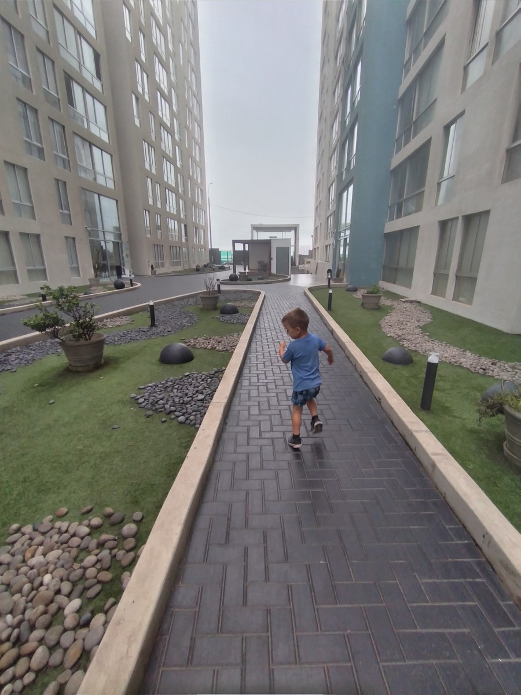

Preventing Elopement in Homes for Autistic Adults
Understanding risk, supporting safe movement, and preparing people to respond.

Preventing unsafe leaving starts with understanding the adult, the situations in which they may leave, and the support that makes moving around safer. A useful plan combines communication, a suitable environment, dependable people, and a rehearsed emergency response. No device or house rule can guarantee that someone will never become lost.
“Elopement” is often used when someone leaves a safe area or support arrangement and may be harmed. It should not become a label for every independent choice an autistic adult makes. Wanting a walk, privacy, or relief from noise is ordinary. The planning question is what help this particular person needs to pursue that choice safely.
If someone is missing and may be in danger, contact local emergency services immediately. Tell responders about the specific risks, communication needs, and last known location. Do not wait for a planning checklist to be completed.
What happened in Lima
We were staying in an Airbnb in an oceanfront apartment complex in Lima, Peru. The buildings were inside a gated area, with a security office at the front. Inside the apartment, though, the door worked like a hotel door: it was very easy to get out, with no way to lock it from the inside.
One day I was cleaning and thought Sam was playing in the living room. When I came out, I discovered he had left the apartment. He had made his way to the elevators, and I only caught him as he was running toward the front of the complex. Security was standing there thinking it was so funny. It wasn’t.
That experience showed me why layers of protection matter, even for a parent who is trying hard to keep their child safe. I had thought Sam was in the living room. The apartment door, the shared building space, and the people at the entrance were all parts of the situation. A gated complex did not mean I could assume every part of it would work the way I expected.
Layers of protection are a big part of Casa de SAM’s vision, so future residents can have both freedom and safety. That means planning how the environment, everyday support, and people’s responsibilities work together. It does not mean copying a particular lock arrangement from one family’s experience. Any proposed door or access system would need individual assessment, lawful decision-making, and a safe way out in an emergency.
Define the actual concern
Begin with a description rather than “is a wanderer.” What happened? Where was the person going? What support was expected? Was there a road, water, unfamiliar terrain, or another immediate hazard? Separate a witnessed event from a prediction.
A person who leaves a crowded room to find quiet presents a different planning problem from someone who walks toward a favorite place without recognizing a dangerous crossing. Those are hypothetical examples, not explanations to assume about an individual. Ask the adult, using their communication system, and involve people who know them well.
The CDC’s wandering guidance describes prevention and response planning for children and young people. It is a useful starting resource, but its child research should not be presented as an adult prevalence estimate or permission to restrict an adult’s movement.
For a broader look at the setting, read What Makes a Home Safe for an Autistic Adult?. A safe doorway matters, but so does what happens on either side of it.
Ask what the person is seeking or avoiding
Keep brief, factual notes about incidents and near misses: time, location, what happened immediately beforehand, how the adult communicated, and what happened next. Avoid filling gaps with motives such as “attention seeking” or “being difficult.”
Ask whether the adult has a workable way to request going outside, ending an activity, seeing someone, or taking a break. A request is not workable if a communication board exists but is out of reach, or if nobody has time to respond.
Consider whether something in the environment needs attention. NICE’s guidance for autistic adults asks services to consider sensory features and adapt the physical setting. This is UK guidance, not a legal standard for Paraguay. Its relevance here is the reminder to examine the surroundings rather than focusing only on the person’s actions.
A new or marked change in behavior also deserves appropriate professional attention. Do not assume that every change is “the autism,” or use a blog article to diagnose its cause.
Make safe access part of the plan
Ask what going outside currently requires. Does the adult have to wait until a busy worker finishes several other tasks? Is there a preferred route that could be planned into the day? Is there a quiet outdoor space they actually enjoy?
A practical discussion might identify a chosen activity, the assistance needed, the person responsible, and a backup when that person is unavailable. Describe what happens when the adult wants to go at an unplanned time, too. A schedule that allows outings only on paper is not reliable support.
For someone who communicates without speech, document how they express “outside,” “finished,” and “help.” Housing for Nonverbal Autistic Adults With High Support Needs explores why communication access belongs in housing decisions.
Evaluate equipment without treating it as supervision
Door alerts, location devices, and environmental changes may come up in planning. Ask what each option does and does not do before choosing it. An alert identifies an event; someone still needs to notice it and respond. A tracker depends on practical factors such as whether it is carried, charged, and connected.
Discuss consent, privacy, who receives information, and what happens if the device fails. Do not publish a person’s live location or private safety profile. Where decision-making support or legal authority is relevant, obtain advice under the rules that apply locally.
Locks and barriers require particular care. Do not improvise changes that could trap someone during a fire or prevent emergency access. A qualified local fire-safety or building professional should assess proposed changes alongside the care team and the adult. The U.S. Fire Administration’s disability fire-safety guidance is a planning resource, not approval for a particular installation.
Write the response before an emergency
Build the response with the provider and appropriate local professionals. Keep it accessible to the people responsible, while protecting private information. Questions to settle include:
- Who calls emergency services, and who stays with other residents?
- What location, last-seen time, clothing description, and communication information should be ready?
- Which nearby hazards and likely destinations should be reported to responders?
- Who contacts the agreed family member or representative?
- What happens at night, during a shift change, or when the usual worker is absent?
- Where is the current plan kept, and how are old copies removed?
Do not send an untrained person into water, traffic, or another hazardous search situation. Follow emergency responders’ instructions. Once the adult is found, their immediate welfare comes first; the incident review can follow when they are safe and supported.
What You Can Do This Week
Choose one ordinary transition, such as arriving home or leaving for an outing. Walk through it with the adult and the people who provide support. Write down where responsibility changes hands and any point at which everyone could assume somebody else is watching.
Update one emergency contact sheet. Check that the people named have actually agreed to their roles. Then arrange a calm discussion of one unresolved question, whether that is communication access, staffing, or the safety of an existing door arrangement.
You do not need to redesign the whole home this week. One verified handoff is more useful than a long plan full of assumptions.
Long-Term Questions
Will the arrangement still work if a family caregiver is unavailable? Can new staff learn it without relying on one person’s memory? What would trigger a review: an incident, a changed preference, a move, or a change in health or staffing?
Review the adult’s experience as well as incident records. Are they getting out more comfortably? Can they ask for a change? Has a precaution quietly become a permanent restriction without anyone reconsidering it?
Keep the answers in the person’s own plan. Why Disability Support Plans Must Be Individualized explains how to turn general intentions into responsibilities another supporter can understand.
About Casa de SAM
Casa de SAM is a developing vision for a lifelong residential community in Paraguay for adults with developmental disabilities who need ongoing support. The project is in its planning and organisational stage, with a long-term opening goal of 2035. It is not an operating residential provider, is not yet a registered nonprofit, and is not currently accepting donations.
A future home needs to take unsafe leaving seriously while still making space for movement, choice, and an enjoyable daily life. The aim is a plan that protects a person without reducing their life to a risk label.
Sources checked November 1, 2026. General educational information, not an individual clinical, legal, safeguarding, or fire-safety assessment. The cited U.S. and UK resources have their own scope; they do not establish rules or service entitlements in Paraguay. Obtain qualified local advice before changing supervision, restrictive measures, or emergency arrangements.